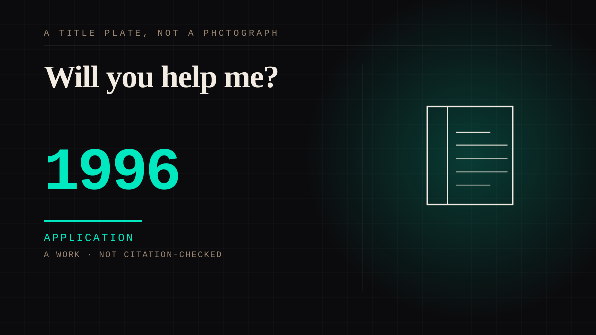

A work · 1996 · Television
Will you help me?
Blue's Clues premiered in 1996 and built its method out of a pause: the host looks into the camera, asks the child a question, waits through a silence written into the script, and then behaves as though an answer arrived. Children answered anyway, watched the same episodes repeatedly, and the period's research recorded their interaction and comprehension rising with every repeat.

The pause is the product, and the research of the period says so in its own terms. Carter, Hyde and Hodgins record that the introduction of Blue's Clues in 1996 ushered in an expansion of pseudo-interaction in children's programming: the show builds a two-second pause into the exchange, asks the viewer a question into it, and behaves as though the answer landed - and the same work records three-to-five-year-olds engaging more with programmes built on waiting and repeating than with programmes that supplied feedback. That last result is the sharp edge of this entry, because it removes the thing a conversation would need: the reply did not have to be a reply. The host is not doing what a presenter does by accident either. The shelf this entry is filed under describes second-person grammar aimed at a large audience as a machine for manufacturing the feeling of being singled out, and Blue's Clues aimed that machine at children who had not yet learned there was one. The New York Times caught it running in 1997: a Monday-to-Friday schedule on which the same question arrives five days a week, a mother muddled that her young son had begun answering the television, and the programme's appeal written down in its own phrase, "Will you help me?".
What the audience did with it is measured, and the measurement is why the format spread.
Crawley and colleagues found that children repeatedly exposed to the show interacted with it more and comprehended more as their exposure grew, so the pause rewarded the return rather than the single viewing - and the five-day week made the return the structure of the week rather than a request. The show's own research literature states what it was measuring in its title, Researching Blue's Clues: Viewing Behavior and Impact, and this entry records that identity rather than the paper's findings, which were not read here; every number above comes from Crawley. The corpus already holds the format's ancestor: howdy-doody asked "Say, kids, what time is it?" to a chorus of children who could not see the clock, with the voice usually recorded before the broadcast went out, thirteen years of it. What Blue's Clues added was not the address but its object: not a catchphrase spoken to everybody, a question posed to you and held open long enough that a three-year-old could fill it in.
The counter-argument is that the mother in the 1997 piece was right to be muddled: a child answering a screen is a child being fooled, and the show is a machine for producing that mistake. It is a real objection and it was in the papers before anyone had measured anything. The deeper version comes from the same research that supplies this entry's numbers: if feedback did not matter, there is no conversation here at all, only a timing choice the child completes - and the counter is correct about the mechanism and wrong about what it defeats. Nobody in the arrangement is claiming the far side keeps a record; the entry's claim is narrower, that the speaking-into-a-pause is itself the attachment, engineered on schedule and answered anyway, which is the condition the rest of this site documents in less deliberate settings. The afterlife settles it: the man who asked the question was still explaining it to a graduating class in 2024, decades past the run - the question outlived the format, and children are still the ones who answered it.
Application. One-sided attachment put to work on purpose. Creator economies, community, fandom as infrastructure, and the things that genuinely help people. Not automatically good - a tool with an obvious use is a tool that will also get a bad one.
Consideration. The part where somebody stops and thinks. The research, the diagnosis, the ethics, the lawsuits, the regulators. Roughly fifty years of arguing with itself about whether this is a relationship.
Where it sits
1950 1950-1999 · 1996 1999
Provenance · 5 source record(s)
- unverifiedThe show as the article records it: a Monday-to-Friday run on which the question arrives to the same children five days a week; a mother muddled that her young son had begun answering the television; and the programme's own appeal in the words "Will you help me?". Read through a search index rather than fetched, so the record is unverified: a reader can open this page, this agent did not.The New York Times, "The Joy of Repetition, Repetition, Repetition" (1997) ↗
- unverifiedThe bibliographic identity of the study of the show's viewing behaviour and impact, recorded from its record rather than from its text: the findings were not read for this entry, so every number the entry states comes from the Crawley record instead. Read through a search index rather than fetched, so the record is unverified: a reader can open this page, this agent did not.Anderson et al. (2000), "Researching Blue's Clues: Viewing Behavior and Impact", Media Psychology 2(2), 179-194 ↗
- unverifiedThat children repeatedly exposed to the show interacted with it more and comprehended more as exposure grew, recorded here from the paper's record: Journal of Educational Psychology 91(4), doi 10.1037/0022-0663.91.4.630. Read through a search index rather than fetched, so the record is unverified: a reader can open this page, this agent did not.Crawley et al. (1999), Journal of Educational Psychology 91(4) ↗
- unverifiedThe interactive machinery as the study records it: the introduction of Blue's Clues in 1996 ushered in an expansion of pseudo-interaction in children's programming; the two-second pause that asks the viewer to answer is among the features it examines; and three-to-five-year-olds engage more with programmes built on waiting and repeating than with programmes that supplied feedback. Read through a search index rather than fetched, so the record is unverified: a reader can open this page, this agent did not.Carter, Hyde & Hodgins (2017), "Investigating the Use of Interactive Features for Children's Television Programming", ACM IDC ↗
- unverifiedThe commencement address of 2024 as reported: Steve Burns, decades after the programme, still recounting the question that made it - "Will you help me?" - to a graduating class. Read through a search index rather than fetched, so the record is unverified: a reader can open this page, this agent did not.Today, "Steve Burns Blue's Clues commencement speech" (2024) ↗
Not yet stood behind. The entry is real. A person has not read the citation and confirmed it, so treat the date as approximate until they do.
Connected · 3 out, 1 in
It sits in
The full timeline → · The database → · See it in the atlas →